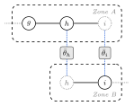
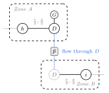
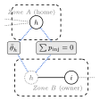

Coupling and sectioning
A distributed run makes two independent choices. Sectioning decides how the grid is cut into zones and what happens to the buses on the boundary. Coupling decides which boundary quantities the zones have to agree on before the run is considered converged. You pass both to admm(...) or aladin(...):
admm(coupling = :hybrid, sectioning = :tie_line)
aladin(coupling = :state, sectioning = :tie_line)coupling is one of :state, :power, :hybrid. sectioning is one of :tie_line, :dummy_bus, :split_bus. The two choices are not fully independent: some combinations are not supported, and one combination behaves differently under ALADIN than under ADMM. The matrix in Supported combinations is the part worth reading carefully.
The zones themselves come from the bus.zone column of the case, so the input must already be partitioned into two or more zones that share at least one inter-zonal branch.
Sectioning
All three strategies start from the same zones and differ only in how they treat the inter-zonal branches and the buses at their ends. Each one is drawn below under its own heading, in a shared style: a solid circle is a bus the zone owns, a dotted circle is a virtual (ghost) copy pulled in from a neighbour, solid lines are branches, dotted grey lines run off to the rest of the grid, and the dotted blue links tie each zone's own copy of a boundary quantity to the shared value in the grey consensus box.
:tie_line
The zones overlap on the boundary buses. Each zone pulls in the buses one hop across its inter-zonal branches as extra (virtual) buses, and the tie-line itself stays in the model. A boundary bus therefore appears in more than one zone, and the zones reconcile it as the run proceeds. This is the default for both algorithms.

:state that quantity is the bus state: the angle θ for DC, the angle and |V| for AC, and v², R, T for SOCWR. With :power it is the tie-line flow instead, and :hybrid couples both.
:dummy_bus
Each inter-zonal branch is cut in the middle by inserting one new dummy bus. The original line becomes two half-lines, each carrying half the series impedance, the line charging is moved back to the two original endpoints, and a zero-cost dummy generator is added at the dummy bus. There is a single dummy bus per tie, shared between the two zones: it is a real bus in the from-zone, which also holds the dummy generator and one half-line, and a virtual ghost in the to-zone, which holds the other half-line. The zones then agree on the power flowing through the dummy bus. Because the thing being reconciled is a flow, :dummy_bus only makes sense with a coupling that carries power (see the matrix).

:hybrid the voltage state at D is reconciled too. This needs :power or :hybrid, never :state.
:split_bus
Each inter-zonal branch is given a single owner zone, the zone of its to-bus, and the branch stays wholly inside that owner with its full impedance. The neighbouring (from) zone's boundary bus is cloned into the owner as a ghost with its load, shunt, and generation zeroed. Because :split_bus runs only under :hybrid, the shared bus is reconciled in two ways at once: its boundary state is driven to agree across the copies, and the net injections the sharing zones attribute to it are tied by an injection consensus, so that they sum consistently (the N-way case, where a bus is shared by three or more zones, is handled the same way). Both reconciliations live only in the hybrid workspaces, which is why :split_bus requires :hybrid.

:hybrid, the shared bus is reconciled two ways at once: its boundary state (the angle θ, plus |V| for AC or v² for SOCWR) is driven to agree across the copies, and the per-zone net injections are constrained to sum to zero (Σ pinj = 0, plus qinj for AC and SOCWR). A bus shared by three or more zones is summed the same way.
Coupling
Coupling selects which boundary quantities enter the consensus. What :state means depends on the model, because each formulation carries a different boundary state.
:state— the boundary voltage state only.- DC: the bus angle
θ. - AC: the bus angle
θand the voltage magnitudeV. - SOCWR: the W-space boundary quantities, the squared voltage magnitude
v²and the real and imaginary voltage-product termsRandT.
- DC: the bus angle
:power— the branch flows across the boundary only.- DC: the active flow
p. - AC and SOCWR: the active and reactive flows
pandq.
- DC: the active flow
:hybrid— both the state and the power.
Each (model, coupling) pair has its own set of penalty parameters (rho). In practice you pass a single rho = ... and Lirion fills in the ones that pair needs; the per-block names and the adaptive updates are described in ADMM settings and ALADIN settings.
Supported combinations
This is the full matrix. A ✓ is a combination you can run; a ✗ raises an ArgumentError at solve that prints the allowed options.
coupling | sectioning | ADMM | ALADIN |
|---|---|---|---|
:state | :tie_line | ✓ | ✓ |
:state | :dummy_bus | ✗ | ✗ |
:state | :split_bus | ✗ | ✗ |
:power | :tie_line | ✓ | ✓ |
:power | :dummy_bus | ✓ | ✓ (✗ for SOCWR) |
:power | :split_bus | ✗ | ✗ |
:hybrid | :tie_line | ✓ | ✓ |
:hybrid | :dummy_bus | ✓ | ✓ (✗ for SOCWR) |
:hybrid | :split_bus | ✓ | ✓ |
The ADMM column is the same for every model (DC, AC, SOCWR, SOCWRNL). The ALADIN column is the same for DC, AC, and SOCWRNL; the two "(✗ for SOCWR)" cells are where ALADIN on the conic SOCWR model is more restrictive, as explained below.
Read as rules:
:stateworks only with:tie_line. State consensus is defined on the shared boundary buses, which only:tie_linekeeps. With:dummy_busthe consensus quantity is a flow, and:split_busneeds:hybrid, so both are rejected.:powerworks with:tie_lineor:dummy_bus. It is rejected with:split_bus, whose injection consensus exists only under:hybrid.:hybridworks with all three. It is the only coupling that unlocks:split_bus.:dummy_busneeds:poweror:hybrid. With:statethe flow across the dummy bus would be uncoupled while the dummy generators inject power at zero cost, which is not a valid decomposition.:split_busneeds:hybrid.
The ALADIN + SOCWR exception
ALADIN does not support :dummy_bus on the SOCWR model, for any coupling. The coordinator QP converges to a relaxed solution in that case, so the combination is rejected rather than run silently. Concretely, under ALADIN + SOCWR the two dummy-bus cells above become unavailable:
:powerworks with:tie_lineonly.:hybridworks with:tie_lineor:split_bus.
:tie_line and :split_bus are unaffected. If you need SOCWR with :dummy_bus, use ADMM, which supports it for :power and :hybrid.
Trying the unsupported combination raises an error instead of producing a result:
# ALADIN + SOCWR + :dummy_bus is NOT supported — this raises ArgumentError
solve("paper/cases/partitioned/case24_ieee_rts/std/k3/case.m";
model = socwr(),
algorithm = aladin(coupling = :hybrid, sectioning = :dummy_bus),
)
# ArgumentError: ALADIN is not supported for SOCWR + DummyBus sectioning ...
# Use ADMM for this combination, or switch sectioning to :tie_line / :split_bus for ALADIN on SOCWR.socwrnl() is a smooth-NLP sibling of socwr() that solves the same W-space relaxation with a nonlinear solver. Under ALADIN it is not subject to the exception above: it follows the DC/AC column and supports :dummy_bus with :power or :hybrid. The socwr() conic model is the one that drops :dummy_bus under ALADIN.
Examples
Every combination shown here is valid. The examples use the three-zone partition of the IEEE RTS 24-bus case (PGLib-OPF) shipped with Lirion at paper/cases/partitioned/case24_ieee_rts/std/k3/case.m. A distributed run needs a case whose bus.zone column defines at least two zones, so a single-zone case would raise.
Hybrid coupling on tie-lines, the ADMM default:
using Lirion
result = solve("paper/cases/partitioned/case24_ieee_rts/std/k3/case.m";
model = ac(),
algorithm = admm(coupling = :hybrid, sectioning = :tie_line, rho = 1e3),
)State coupling on tie-lines, the ALADIN default:
result = solve("paper/cases/partitioned/case24_ieee_rts/std/k3/case.m";
model = dc(),
algorithm = aladin(coupling = :state, sectioning = :tie_line),
)Power coupling across dummy buses:
result = solve("paper/cases/partitioned/case24_ieee_rts/std/k3/case.m";
model = dc(),
algorithm = admm(coupling = :power, sectioning = :dummy_bus, rho = 1e3),
)Hybrid coupling with cloned boundary buses:
result = solve("paper/cases/partitioned/case24_ieee_rts/std/k3/case.m";
model = ac(),
algorithm = admm(coupling = :hybrid, sectioning = :split_bus, rho = 1e3),
)SOCWR under ALADIN, which is fine on tie-lines (and on :split_bus with :hybrid):
result = solve("paper/cases/partitioned/case24_ieee_rts/std/k3/case.m";
model = socwr(),
algorithm = aladin(coupling = :hybrid, sectioning = :tie_line),
)Where to go next
- ADMM settings — penalties, adaptive
rho, and stopping tolerances. - ALADIN settings — proximal mode, stopping criterion, and the coordination step.
- For what
resultholds, see the Decentralized section of Results.